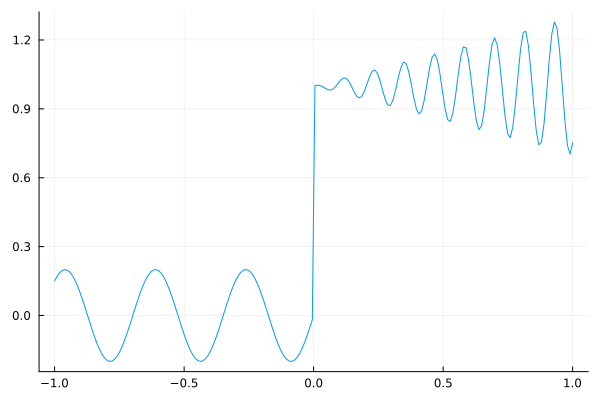
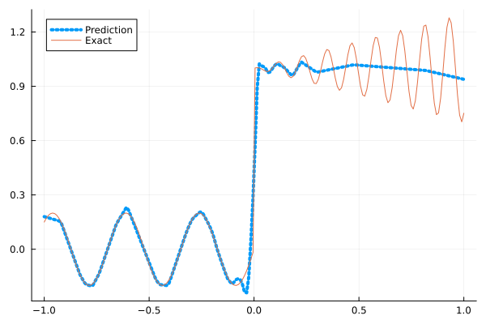
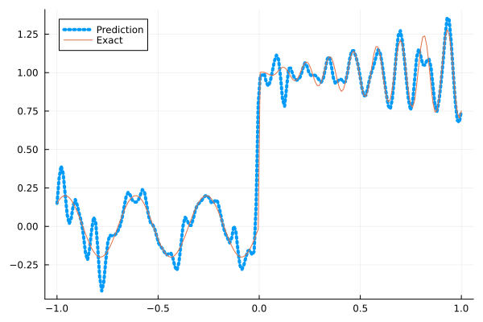
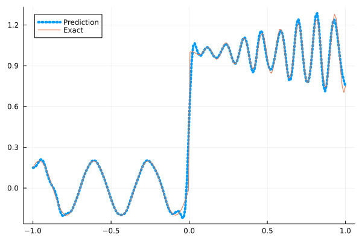
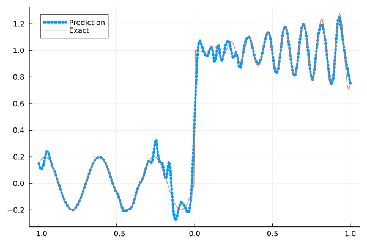
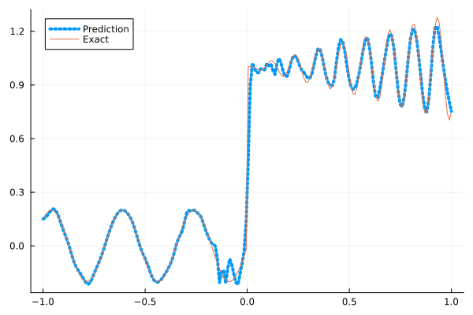

Fitting a nonlinear discontinuous function
This example is taken from here. However, we do not use adaptive activation functions. Instead, we show that using suitable non-parametric activation functions immediately performs better.
Consider the following discontinuous function with discontinuity at $x=0$:
\[u(x)= \begin{cases}0.2 \sin (18 x) & \text { if } x \leq 0 \\ 1+0.3 x \cos (54 x) & \text { otherwise }\end{cases}\]
The domain is $[-1,1]$. The number of training points used is 50.
Import pacakges
using Lux, Sophon
using NNlib, Optimisers, Plots, Random, StatsBase, ZygoteDataset
function u(x)
if x <= 0
return 0.2 * sin(18 * x)
else
return 1 + 0.3 * x * cos(54 * x)
end
end
function generate_data(n=50)
x = reshape(collect(range(-1.0f0, 1.0f0, n)), (1, n))
y = u.(x)
return (x, y)
endgenerate_data (generic function with 2 methods)Let's visualize the data.
x_train, y_train = generate_data(50)
x_test, y_test = generate_data(200)
Plots.plot(vec(x_test), vec(y_test),label=false)
Naive Neural Nets
First we demonstrate show naive fully connected neural nets could be really bad at fitting this function.
model = FullyConnected((1,50,50,50,50,1), relu)Chain(
layer_1 = Dense(1 => 50, relu), # 100 parameters
layer_2 = Dense(50 => 50, relu), # 2_550 parameters
layer_3 = Dense(50 => 50, relu), # 2_550 parameters
layer_4 = Dense(50 => 50, relu), # 2_550 parameters
layer_5 = Dense(50 => 1), # 51 parameters
) # Total: 7_801 parameters,
# plus 0 states.Train the model
function train(model, x, y)
ps, st = Lux.setup(Random.default_rng(), model)
opt = Adam()
st_opt = Optimisers.setup(opt,ps)
function loss(model, ps, st, x, y)
y_pred, _ = model(x, ps, st)
mes = mean(abs2, y_pred .- y)
return mes
end
for i in 1:2000
gs = gradient(p->loss(model,p,st,x,y), ps)[1]
st_opt, ps = Optimisers.update(st_opt, ps, gs)
if i % 100 == 1 || i == 2000
println("Epoch $i || ", loss(model,ps,st,x,y))
end
end
return ps, st
endtrain (generic function with 1 method)Plot the result
@time ps, st = train(model, x_train, y_train)
y_pred = model(x_test,ps,st)[1]
Plots.plot(vec(x_test), vec(y_pred),label="Prediction",line = (:dot, 4))
Plots.plot!(vec(x_test), vec(y_test),label="Exact",legend=:topleft)Epoch 1 || 0.39366569730369944
Epoch 101 || 0.016089614129787235
Epoch 201 || 0.013447771990412498
Epoch 301 || 0.013005010399018958
Epoch 401 || 0.012321472577272093
Epoch 501 || 0.010937855263971627
Epoch 601 || 0.008739528312486726
Epoch 701 || 0.007689998305886416
Epoch 801 || 0.007556315554667678
Epoch 901 || 0.007557779122015388
Epoch 1001 || 0.0075040481414308195
Epoch 1101 || 0.007483049815065153
Epoch 1201 || 0.0074639181029827065
Epoch 1301 || 0.007454377251977908
Epoch 1401 || 0.007427644844497401
Epoch 1501 || 0.0074043860122698325
Epoch 1601 || 0.0074035336359363595
Epoch 1701 || 0.007379142611077337
Epoch 1801 || 0.007353450295848532
Epoch 1901 || 0.007337184997961262
Epoch 2000 || 0.007322513061184482
9.211778 seconds (11.65 M allocations: 1.368 GiB, 4.60% gc time, 91.60% compilation time)
Siren
We use four hidden layers with 50 neurons in each.
model = Siren(1,50,50,50,50,1; omega = 30f0)Chain(
layer_1 = Dense(1 => 50, sin), # 100 parameters
layer_2 = Dense(50 => 50, sin), # 2_550 parameters
layer_3 = Dense(50 => 50, sin), # 2_550 parameters
layer_4 = Dense(50 => 50, sin), # 2_550 parameters
layer_5 = Dense(50 => 1), # 51 parameters
) # Total: 7_801 parameters,
# plus 0 states.@time ps, st = train(model, x_train, y_train)
y_pred = model(x_test,ps,st)[1]
Plots.plot(vec(x_test), vec(y_pred),label="Prediction",line = (:dot, 4))
Plots.plot!(vec(x_test), vec(y_test),label="Exact",legend=:topleft)Epoch 1 || 0.6753237816267847
Epoch 101 || 0.0008986679866275285
Epoch 201 || 2.82981624225139e-5
Epoch 301 || 5.064378819989818e-7
Epoch 401 || 5.328137170265946e-9
Epoch 501 || 2.9837066267371544e-11
Epoch 601 || 6.206263482695844e-13
Epoch 701 || 7.775247599582152e-14
Epoch 801 || 3.84075427407755e-14
Epoch 901 || 3.246510867478425e-14
Epoch 1001 || 4.529884028531599e-14
Epoch 1101 || 6.676174301267785e-14
Epoch 1201 || 3.179191033098456e-14
Epoch 1301 || 5.969818360717015e-14
Epoch 1401 || 2.257152126636735e-14
Epoch 1501 || 4.232816436563689e-14
Epoch 1601 || 3.0548861774164063e-14
Epoch 1701 || 6.230812253256742e-14
Epoch 1801 || 6.974194500366548e-14
Epoch 1901 || 3.782103567194765e-14
Epoch 2000 || 4.660998081162969e-14
4.804150 seconds (7.76 M allocations: 1.258 GiB, 5.15% gc time, 84.24% compilation time)
As we can see the model overfits the data, and the high frequencies cannot be optimized away. We need to tunning the hyperparameter omega
model = Siren(1,50,50,50,50,1; omega = 10f0)Chain(
layer_1 = Dense(1 => 50, sin), # 100 parameters
layer_2 = Dense(50 => 50, sin), # 2_550 parameters
layer_3 = Dense(50 => 50, sin), # 2_550 parameters
layer_4 = Dense(50 => 50, sin), # 2_550 parameters
layer_5 = Dense(50 => 1), # 51 parameters
) # Total: 7_801 parameters,
# plus 0 states.@time ps, st = train(model, x_train, y_train)
y_pred = model(x_test,ps,st)[1]
Plots.plot(vec(x_test), vec(y_pred),label="Prediction",line = (:dot, 4))
Plots.plot!(vec(x_test), vec(y_test),label="Exact",legend=:topleft)Epoch 1 || 0.6036753451001993
Epoch 101 || 0.006112650524075014
Epoch 201 || 0.004542461909881923
Epoch 301 || 0.0036970110361454435
Epoch 401 || 0.0028855847505348557
Epoch 501 || 0.0019568653437851717
Epoch 601 || 0.0011512561425228607
Epoch 701 || 0.0006439938688317852
Epoch 801 || 0.00035329355956386407
Epoch 901 || 0.00018993654935919852
Epoch 1001 || 9.92943050076122e-5
Epoch 1101 || 5.655309758830867e-5
Epoch 1201 || 3.891549044926932e-5
Epoch 1301 || 3.0870533881502186e-5
Epoch 1401 || 2.6098961667839958e-5
Epoch 1501 || 2.25949939852997e-5
Epoch 1601 || 1.9742324826075703e-5
Epoch 1701 || 1.7333528244646367e-5
Epoch 1801 || 1.527195237242664e-5
Epoch 1901 || 1.3498901251966411e-5
Epoch 2000 || 1.1979589539528359e-5
0.651410 seconds (1.15 M allocations: 892.517 MiB, 7.35% gc time)
Gaussian activation function
We can also try using a fully connected net with the gaussian activation function.
model = FullyConnected((1,50,50,50,50,1), gaussian)Chain(
layer_1 = Dense(1 => 50, gaussian), # 100 parameters
layer_2 = Dense(50 => 50, gaussian), # 2_550 parameters
layer_3 = Dense(50 => 50, gaussian), # 2_550 parameters
layer_4 = Dense(50 => 50, gaussian), # 2_550 parameters
layer_5 = Dense(50 => 1), # 51 parameters
) # Total: 7_801 parameters,
# plus 0 states.@time ps, st = train(model, x_train, y_train)
y_pred = model(x_test,ps,st)[1]
Plots.plot(vec(x_test), vec(y_pred),label="Prediction",line = (:dot, 4))
Plots.plot!(vec(x_test), vec(y_test),label="Exact",legend=:topleft)Epoch 1 || 1.3526748055393916
Epoch 101 || 0.004945827389726109
Epoch 201 || 0.004171599143444103
Epoch 301 || 0.0034704759692197945
Epoch 401 || 0.0023912408770743053
Epoch 501 || 0.0005937822683139629
Epoch 601 || 9.489326284273815e-6
Epoch 701 || 1.8828807007689118e-6
Epoch 801 || 7.728989831925077e-7
Epoch 901 || 4.019276648630418e-7
Epoch 1001 || 2.088489732872457e-7
Epoch 1101 || 1.0575252291414832e-5
Epoch 1201 || 5.831464250446743e-8
Epoch 1301 || 3.3748521136086725e-8
Epoch 1401 || 2.3442082034174276e-7
Epoch 1501 || 7.883787724731011e-9
Epoch 1601 || 6.252242325060055e-5
Epoch 1701 || 1.2499887885946924e-7
Epoch 1801 || 7.461244932396436e-9
Epoch 1901 || 4.056521490431459e-7
Epoch 2000 || 1.917071074654325e-9
4.582631 seconds (6.84 M allocations: 1.208 GiB, 5.00% gc time, 81.64% compilation time)
Quadratic activation function
quadratic is much cheaper to compute compared to the Gaussain activation function.
model = FullyConnected((1,50,50,50,50,1), quadratic)Chain(
layer_1 = Dense(1 => 50, quadratic), # 100 parameters
layer_2 = Dense(50 => 50, quadratic), # 2_550 parameters
layer_3 = Dense(50 => 50, quadratic), # 2_550 parameters
layer_4 = Dense(50 => 50, quadratic), # 2_550 parameters
layer_5 = Dense(50 => 1), # 51 parameters
) # Total: 7_801 parameters,
# plus 0 states.@time ps, st = train(model, x_train, y_train)
y_pred = model(x_test,ps,st)[1]
Plots.plot(vec(x_test), vec(y_pred),label="Prediction",line = (:dot, 4))
Plots.plot!(vec(x_test), vec(y_test),label="Exact",legend=:topleft)Epoch 1 || 0.28306887803834935
Epoch 101 || 0.005511638803818072
Epoch 201 || 0.004538159244186452
Epoch 301 || 0.003936049611375074
Epoch 401 || 0.002619244063551224
Epoch 501 || 0.0006820007977481404
Epoch 601 || 6.893333523758896e-5
Epoch 701 || 3.8125585246985405e-6
Epoch 801 || 2.0787215580154463e-8
Epoch 901 || 2.0554085239146668e-6
Epoch 1001 || 1.8418310059300543e-5
Epoch 1101 || 3.966466881673394e-9
Epoch 1201 || 1.593659661308136e-12
Epoch 1301 || 6.590329163223377e-7
Epoch 1401 || 2.723655753913195e-9
Epoch 1501 || 1.374152553361057e-7
Epoch 1601 || 2.258038804969342e-8
Epoch 1701 || 8.799219349624621e-5
Epoch 1801 || 1.6732152574510244e-8
Epoch 1901 || 1.611224460864862e-7
Epoch 2000 || 4.911415470611313e-7
4.079966 seconds (6.55 M allocations: 1.190 GiB, 5.53% gc time, 86.82% compilation time)
Conclusion
"Neural networks suppresse high frequency components" is a misinterpretation of the spectral bias. The accurate way of putting it is that the lower frequencies in the error are optimized first in the optimization process. This can be seen in Siren's example of overfitting data, where you do not have implicit regularization. The high frequency in the network will never go away because it has fitted the data perfectly.
Mainstream attributes the phenomenon that neural networks "suppress" high frequencies to gradient descent. This is not the whole picture. Initialization also plays an important role. Siren mitigats this problem by initializing larger weights in the first layer, while activation functions such as gassian have large enough gradients and sufficiently large support of the second derivative with proper hyperparameters. Please refer to [1], [2] and [3] if you want to dive deeper into this.